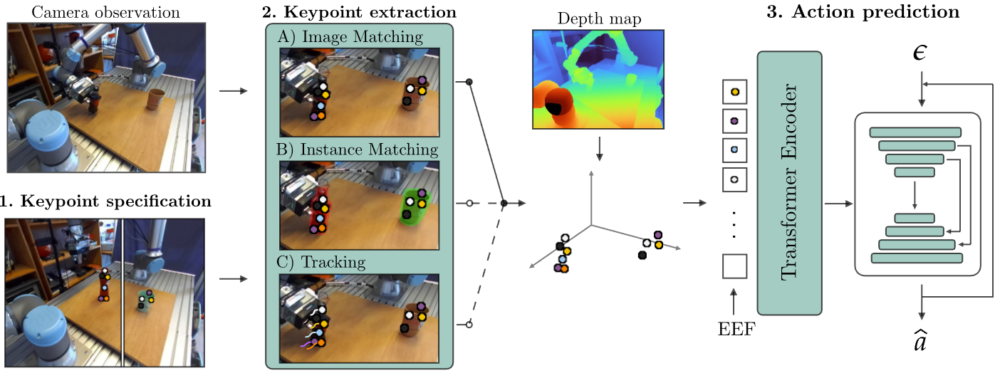
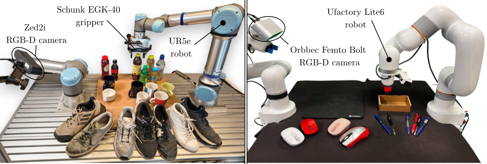
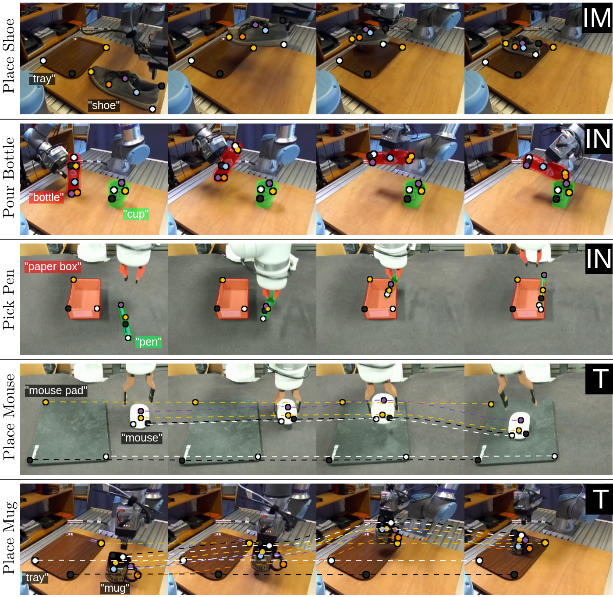

RGB-based imitation learning requires many demonstrations to generalize to unseen objects or scenes, motivating research into intermediate representations to improve generalization for robotic manipulation. Visual foundation models enable one-shot extraction of keypoints to provide such representation. However, it remains unclear how to integrate them into imitation learning optimally and when they outperform alternative representations. We combine approaches from previous works on keypoint imitation learning (KIL) and investigate several design choices to provide practical guidelines. Using over 2000 real-world rollouts, we also assess the generalization capabilities of KIL to unseen objects and scene variations. KIL achieves a 75% overall success rate across five tasks, significantly outperforming the RGB baseline (47%) and performing on par with S2-Diffusion (73%). Finally, we explore the limitations of the foundation models used for keypoint extraction and extend KIL to tasks with multiple object instances. Our results confirm KIL as a data-efficient approach for robot learning, though it does not outperform alternative representations and inherits limitations of the foundation models used for keypoint extraction.



Download Preprint
TODO
Red whiteboard wiping task
Green whiteboard wiping task
Black whiteboard wiping task
All experiments: